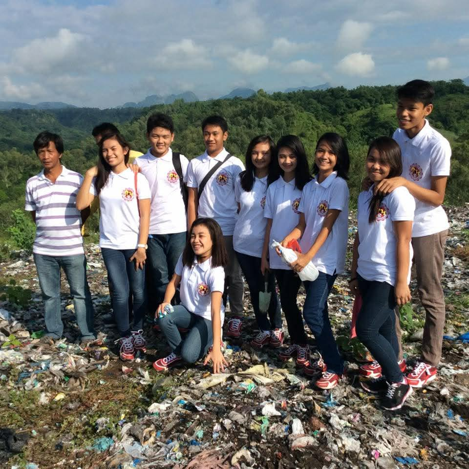
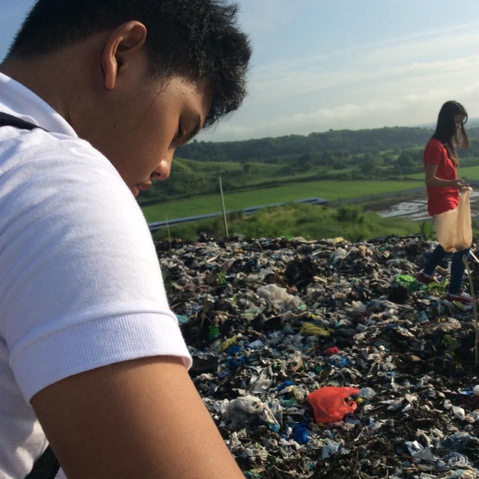

Reflections · Leadership & Development · Case
Leading a Student Council Tree-Planting Project
One of my first projects as elected Student Council President in Junior High School, bringing the council together with the YES-O Club and local government for a tree-planting activity in Barangay Pagalanggang, Dinalupihan, Bataan.
Engagement record
The experience at a glance.
- Institution
- St. John Academy
- Academic year
- 2015–2016
- Role
- Student Council President
- Engagement
- Student-led tree-planting project
- Partner
- YES-O Club
- Location
- Barangay Pagalanggang, Dinalupihan, Bataan
- Leadership scope
- Student council coordination, local government coordination, and seedling requests
- Government link
- Local environment and natural resources office
An early leadership project
The project moved student leadership beyond school activities and into coordination with the local community.
During Academic Year 2015–2016, I was elected Student Council President in Junior High School at St. John Academy. One of the first projects I helped lead was a tree-planting activity conducted with the YES-O Club in Barangay Pagalanggang, Dinalupihan, Bataan.
The project required the council to work beyond the campus. Together with my council, I led coordination with the local government and requested seedlings from the local environment and natural resources office for the activity.
Documentary record
Student leadership in the field.
Photographs from the tree-planting activity in Barangay Pagalanggang.


Coordination as leadership
The work was not limited to showing up on planting day.
The council had to connect with local government and secure the seedlings needed for the activity. That coordination became part of the project itself, requiring communication between student leaders, the partner organization, and a local public office.
For an early term project, it introduced a practical side of student leadership: turning an idea into an activity by aligning people, resources, and external partners.
Environmental action
The setting made the purpose of the project visible.
The planting activity took place in one of the landfill areas in Barangay Pagalanggang. The site placed the project within a visible local environmental context rather than treating tree planting as an abstract school campaign.
Working in that setting connected student participation with a specific place and a concrete environmental activity carried out with community and government coordination.
A larger environmental thread
This early school-led project later connected with a much larger tree-planting experience in Bataan.
The Barangay Pagalanggang activity was one of my earliest experiences of organizing environmental action through student leadership. The work was local and small in scale, but it introduced the practical coordination behind a planting activity: working with partners, securing seedlings, and bringing people together around a shared environmental goal.
In 2016, I would later participate in the much larger 1Bataan Green Legacy Tree Planting Program in Orion. Taken together, the two experiences show the same environmental concern at very different scales: first through student-led local coordination, and later through participation in a province-wide mass planting effort.
Leadership & Development
Return to the leadership record.
Explore the experiences where responsibility, representation, coordination, and service became part of how leadership was learned in practice.
Leadership & Development →